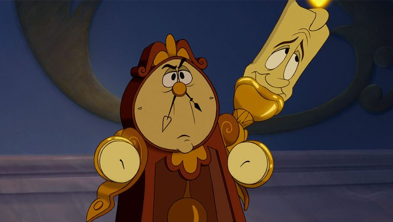

About Cogsworth
Cogsworth, from Beauty and the Beast, is the loyal, uptight, and anxious majordomo of the Beast’s castle. He is transformed into a pendulum clock by the Enchantress. As a strict rule-follower, he often butts heads with the flamboyant Lumière but serves as a key confidant to the Beast, ultimately turning human again when the spell breaks.
Cogsworth irritated with Lumière
Cogsworth’s characteristics
- Strict
- Orderly
- Pompous
- Good-hearted
- Loyal